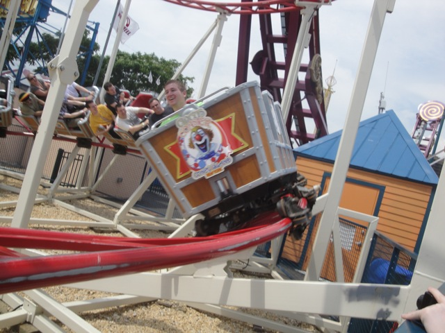
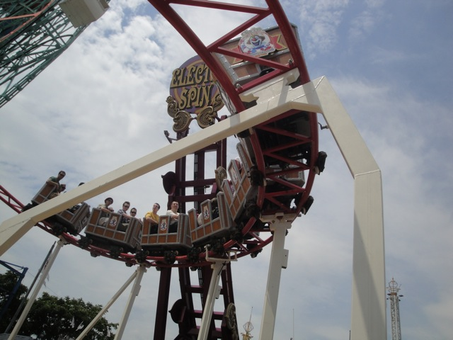

| |
Circus Coaster Review

We're here at Coney Island, or more specifically, the Luna Park, where we'll be reviewing one of the kiddy coasters in the park. The Circus Coaster. Yep. Time to credit whore. So we get in the seat, pull down the lap bar, and away we go. We go around a turn and up the lift hill. Before you know it, we reach the top of the hill. We go around a small little turn and down a small dip before heading back up. This basically leads into a downwards helix, which actually, for a kiddy coaster, has some speed. We go through a tiny hill, and around a curve that actually does have some laterals. And yeah, you go again and that's the ride. Definetly one of the better kiddy coasters out there, but still nothing to worry about missing unless you're a super credit whore.
4/10
Location: Coney Island
Opened: 2010
Built by: Zamperla
Last Ridden: July 28, 2011
Circus Coaster Photos


|